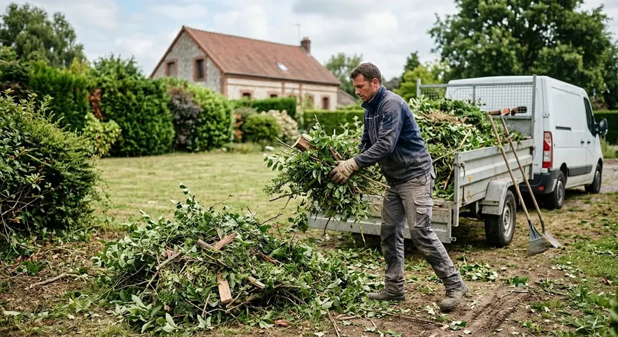

Des arbres plus sûrs
Les branches mortes sont retirées.
L'élagage retire les branches mortes et soutient la santé et la croissance de l'arbre. Un élagage régulier est recommandé. L'équipe réalise aussi les coupes délicates près des lignes électriques et des habitations.
Quand élaguer ? L'hiver est la saison conseillée. Le début du printemps (montée de sève) et la fin de l'automne sont à éviter.
Un arbre malade ou mort doit être retiré rapidement pour limiter le risque de chute. Pour les grands arbres, l'équipe procède par démontage, tronçon après tronçon.

Après l'abattage, la souche et les racines restent. Le rognage retire la souche sans excavation et sans abîmer le terrain autour, puis le sol est nivelé.
Ils sont broyés et évacués. Sur demande, ils peuvent être gardés pour le paillage ou la permaculture.
Appelez l'équipe pour décrire l'arbre et son environnement, ou envoyez votre demande en ligne.
Accueil téléphonique, du lundi au vendredi, 8 h – 12 h
01 39 58 65 58Interventions de 8 h à 12 h et de 13 h à 17 h.